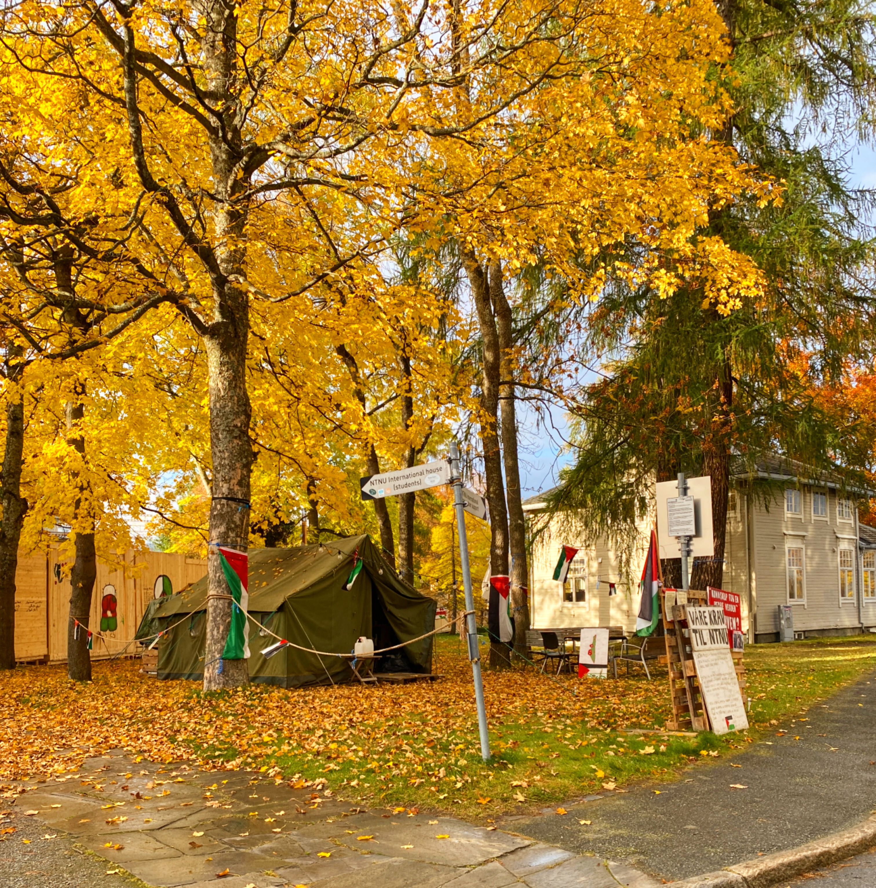

Palestinaleiren ved NTNU er en teltaksjon drevet av studenter og ansatte ved NTNU. I november 2024 reiste vi leir i solidaritet med det palestinske folket. Vi står her for å protestere mot Israels pågående folkemord i Gaza. Vi mener at NTNU – som akademisk institusjon – har et ansvar for å ta tydelig avstand fra folkerettsbrudd og okkupasjon, og for å avslutte all normalisering av samarbeid med institusjoner som støtter eller opprettholder okkupasjonen.
Vi er studenter og ansatte fra en rekke ulike studieretninger og institutt (medisin, kybernetikk og robotikk, filosofi, materialteknologi, arkitektur, historie ++).

Leiren fungerer både som en synlig protest og som et sosialt og politisk rom for samtaler, foredrag og kulturelle arrangementer. Vi ønsker å skape oppmerksomhet rundt Palestina (og NTNUs rolle), og bygge fellesskap.
Leiren er et sted for motstand, omsorg og fellesskap. Vi forsøker å være et trygt sted hvor mennesker kan støtte hverandre i en verden som føles stadig mer brutal og urettferdig. Her kan vi sørge sammen, lære sammen – og gjøre noe.
Vi arrangerer samtaler, workshops, skrivekvelder, filmvisninger, middager, og mer. Noen sover her ofte, andre sover over ei natt her og der, eller kommer innom for å bidra eller være til stede når de kan.
Snakk om Palestina, besøk oss i leiren, overnatt i leiren, bli med å drive leiren, delta på arrangementene våre, eller støtt oss praktisk og økonomisk. Sammen kan vi presse NTNU til å handle ansvarlig!